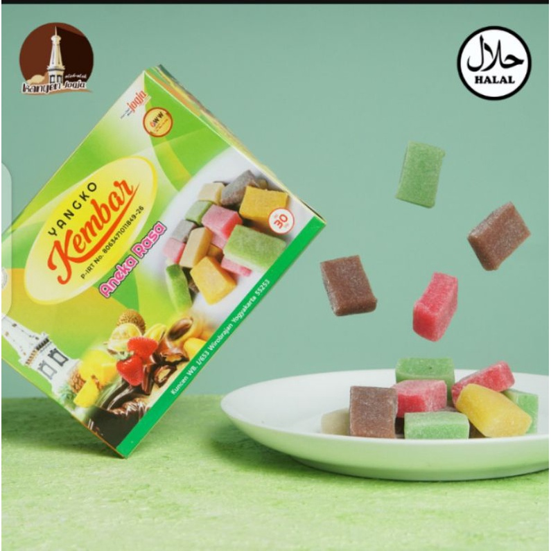
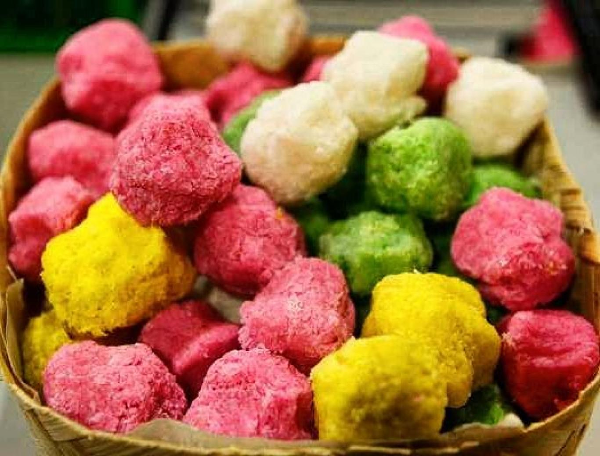
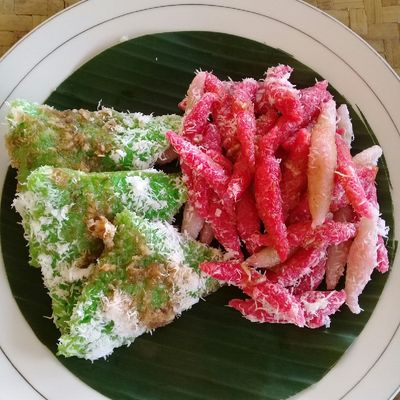

Camilan Manis & Gurih
Jajanan Khas Jogja
Dari gigitan pertama Bakpia yang lumer sampai kenyalnya Yangko, jajanan Jogja selalu punya cara buat bikin kamu kangen balik lagi. Teman pas buat ngopi atau jadi buah tangan tersayang.

Bakpia Pathok
Kue bulat mungil dengan kulit berlapis yang renyah dan isian kacang hijau yang lembut. Seiring berjalannya waktu, variasinya makin modern, mulai dari rasa coklat, keju, sampai green tea kekinian!
Paling nikmat ditemani secangkir teh tawar hangat di sore hari.

Yangko
Sering disebut sebagai "Mochi-nya ala Jogja". Bentuknya kotak imut warna-warni, punya tekstur super kenyal yang manis, dan biasanya menyimpan isian cincangan kacang tanah gurih di bagian dalamnya.
Pas banget disandingkan dengan kopi tubruk pekat tanpa gula.

Geplak
Jajanan legit asal Kabupaten Bantul ini dibuat dari parutan kelapa asli dan lelehan gula murni. Tampilannya ikonik banget dengan warna-warni cerah yang dijamin langsung balikin energi kamu seketika.
Coba nikmati perlahan sambil minum teh melati hangat.

Lupis & Cenil
Jajanan pasar yang melegenda! Harmoni antara ketan berbentuk segitiga dan adonan sagu kenyal, lalu disiram saus kinca (gula merah cair pekat) dan ditaburi kelapa muda parut segar.
Menghangatkan suasana apalagi bareng susu jahe atau wedang uwuh.